4130B40 SUPPLY PIPE FROM PUMP TO POWER STEERING BOX - R.R.
- Path
- Procedures > 41 STEERING UNIT > 4130 POWER STEERING > 4130B POWER STEERING HYDRAULIC SYSTEM > 4130B40 SUPPLY PIPE FROM PUMP TO POWER STEERING BOX - R.R.
- Kind
- repair procedure (removal / refitting; the operation number is the code)
- Applies to
- all engines; all production periods
- Interactive page
- https://sloeber94.github.io/elrnDB-aBrrSpdr/en/#/946002183
Applies to: engines: 2.2 JTS; all production periods
 Removing
Removing
 Refitting
Refitting- Position the vehicle on a lift.
- Draw off the power assisted steering fluid from the reservoir using a suitable syringe.
1. Undo the connector (1a) and disconnect the supply pipe from the pump to the power assisted steering box (1b), power assisted steering pump side.
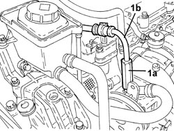
Applies to: engines: 2.2 JTS; all production periods
1. Undo the connector (1a) and disconnect the supply pipe from the pump to the power assisted steering box (1b), power assisted steering box side.
2. Remove the supply pipe from the pump to the power assisted steering box.
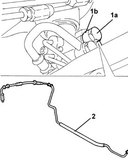
Applies to: engines: 2.2 JTS; all production periods
Refitting
Removing1. Place the supply pipe from the pump to the power assisted steering box back in its housing.
2. Connect the supply pipe from the pump to the power assisted steering box (2a), power assisted steering box side and tighten the connector (2b) to the recommended torque.
Component | Fastening | dia | Value (daNm) | Validity |
|---|---|---|---|---|
Supply pipe from pump to power assisted steering box | Connector | M14 | (power assisted steering box side) 3.6 - 4.4 |
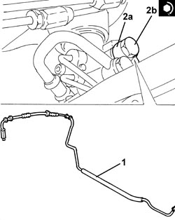
Applies to: engines: 2.2 JTS; all production periods
1. Connect the supply pipe from the pump to the power assisted steering box (1a), power assisted steering pump side and tighten the connector (1b) to the recommended torque.
Component | Fastening | dia | Value (daNm) | Validity |
|---|---|---|---|---|
Supply pipe from pump to power assisted steering box | Connector | M16 | (power assisted steering pump side) 3.6 - 4.4 |
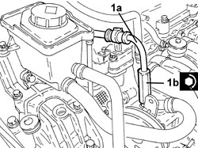
Applies to: engines: 2.2 JTS; all production periods
Op. 0010T71 POWER STEERING FLUID CHECK LEVEL AND TOP UP IF NECESSARY
Op. 0010T75 HYDRAULIC POWER STEERING SYSTEM BLEED AIR
- Remove the vehicle from the lift.
Applies to: engines: 3.2 JTS; all production periods
Removing
RefittingOp. 1016A10 SOUND-PROOFING COVER - R.R
Op. 7055B54 UNDER ENGINE PROTECTION/GUARD - R.R.
- Draw off the power assisted steering fluid from the reservoir using a suitable syringe.
1. Disconnect the gear selector and engagement cables.
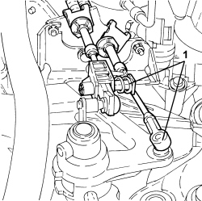
Applies to: engines: 3.2 JTS; all production periods
1. Unscrew the gear selection and engagement cable reaction bracket fastenings and move aside.
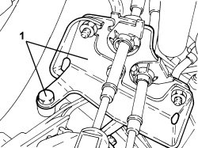
Applies to: engines: 3.2 JTS; all production periods
1. Undo the connector (1a) of the supply pipe from the pump to the power assisted steering box (1b), power assisted steering box side.
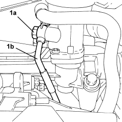
Applies to: engines: 3.2 JTS; all production periods
Op. 4130B34 SUPPLY PIPE FROM FLUID RESEVIOR TO POWER STEERING PUMP - R.R.
1. Undo the connector (1a) of the supply pipe from the pump to the power assisted steering box (1b), pump side.
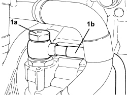
Applies to: engines: 3.2 JTS; all production periods
1. Unscrew bolts (1a) securing the delivery pipe from the pump to the power steering box (1b) to the front suspension frame and remove.
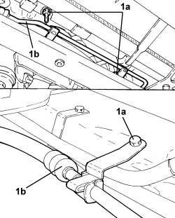
Applies to: engines: 3.2 JTS; all production periods
Refitting
Removing- Place the supply pipe from the pump to the power assisted steering box back in its housing and tighten the bolts to the front suspension frame.
- Tighten the connector on the supply pipe from the pump to the power assisted steering box, pump side to the recommended torque.
Component | Fastening | dia | Value (daNm) | Validity |
|---|---|---|---|---|
Delivery pipe from pump to power assisted steering box - power steering pump side | Connector | M16 | 3.6 ÷ 4.4 |
Op. 4130B34 SUPPLY PIPE FROM FLUID RESEVIOR TO POWER STEERING PUMP - R.R.
- Tighten the connector on the supply pipe from the pump to the power assisted steering box, power assisted steering pump side to the recommended torque.
Component | Fastening | dia | Value (daNm) | Validity |
|---|---|---|---|---|
Delivery pipe from pump to power assisted steering box - power steering box side | Connector | M14 | 3.6 ÷ 4.4 |
- Refit the bracket with gear selection and engagement cables in its seat and tighten the fasteings.
- Connect the cables to the gear selector and engagement unit.
Op. 7055B54 UNDER ENGINE PROTECTION/GUARD - R.R.
Op. 1016A10 SOUND-PROOFING COVER - R.R
Op. 0010T71 POWER STEERING FLUID CHECK LEVEL AND TOP UP IF NECESSARY
Applies to: engines: 2.4 JTD 20v; all production periods
Removing
Refitting- Position the vehicle on a lift.
Op. 7055B54 UNDER ENGINE PROTECTION/GUARD - R.R.
Op. 1048A50 TURBOCHARGER AIR INTAKE PIPE - R.R.
- Draw off the power assisted steering fluid from the reservoir using a suitable syringe.
1. Undo the connector (1a) and disconnect the supply pipe from the pump to the power assisted steering box (1b), power assisted steering box side.
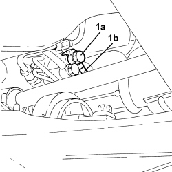
Applies to: engines: 2.4 JTD 20v; all production periods
1. Undo the connector (1a) and disconnect the supply pipe from the pump to the power assisted steering box (1b), power assisted steering pump side and remove after releasing from the intermediate fastenings.
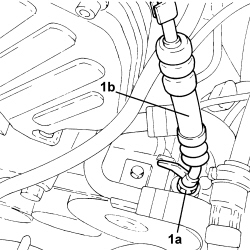
Applies to: engines: 2.4 JTD 20v; all production periods
Refitting
Removing1. Refit the pipe from the pump to the power steering box (1a), secure with intermediate fastenings and connect to the power steering pump. Tighten connector (1b) to the specified torque.
Component | Fastening | dia | Value (daNm) | Validity |
|---|---|---|---|---|
Supply pipe from pump to power assisted steering box | Connector | M16 | (power assisted steering pump side) 3.6 - 4.4 |
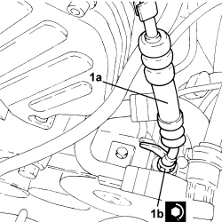
Applies to: engines: 2.4 JTD 20v; all production periods
1. Connect the supply pipe from the pump to the power assisted steering box (1a), power assisted steering box side and tighten the connector (1b) to the recommended torque.
Component | Fastening | dia | Value (daNm) | Validity |
|---|---|---|---|---|
Supply pipe from pump to power assisted steering box | Connector | M14 | (power assisted steering box side) 3.6 - 4.4 |
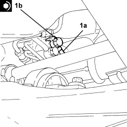
Applies to: engines: 2.4 JTD 20v; all production periods
Op. 1048A50 TURBOCHARGER AIR INTAKE PIPE - R.R.
Op. 0010T71 POWER STEERING FLUID CHECK LEVEL AND TOP UP IF NECESSARY
Op. 0010T75 HYDRAULIC POWER STEERING SYSTEM BLEED AIR
Op. 7055B54 UNDER ENGINE PROTECTION/GUARD - R.R.
- Remove the vehicle from the lift.
Topics linked from this page (7)
- 0010T71 POWER STEERING FLUID CHECK LEVEL AND TOP UP IF NECESSARY
- 0010T75 HYDRAULIC POWER STEERING SYSTEM BLEED AIR
- 1016A10 SOUND-PROOFING COVER - R.R
- 1048A50 TURBOCHARGER AIR INTAKE PIPE - R.R.
- 4130B34 SUPPLY PIPE FROM FLUID RESEVIOR TO POWER STEERING PUMP - R.R.
- 5530B10 BATTERY - R+R
- 7055B54 UNDER ENGINE PROTECTION/GUARD - R.R.